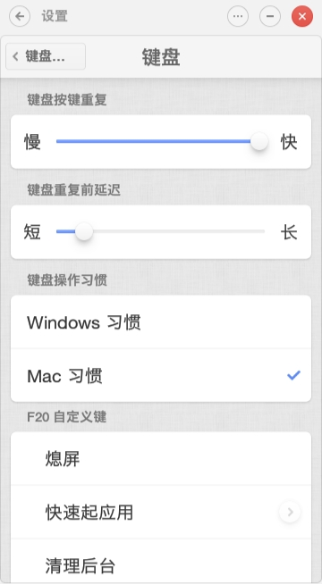
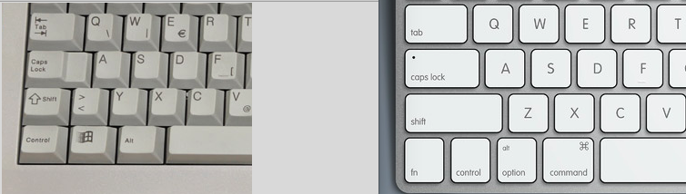

为 Linux 设置与 macOS 一致的开发体验
TLDR 发现了一个神器 xkeysnail 可以全面替换正文中的各个工具，不过下文作为思考和实践的过程还是有参考价值的。
起因
最近试用了锤子科技的 TNT 系统，让我印象深刻的一个细节是它有一个 mac 风格和 pc 风格的按键选项，

在我选择了 macOS 风格后，果然，使用空格左边的按键（alt 或 command），配合 c v w t 可以实现复制，粘贴，关闭tab, 新建tab 等操作（当然仅限于锤子自家的 app）。
这就提起了我的兴趣，在使用 macOS 以前，我就是使用 Linux(Ubuntu) 系统的，换成 macOS 之后，除了漂亮的界面外， macOS 的快捷键设计我也非常喜欢，既然锤子系统是用安卓改的，安卓也是基于 Linux 的，那么我也应该可以在 Linux 上使用 macOS 风格的快捷键。
正巧最近家里的黑苹果因为 Nvida 的驱动问题没法使用，再加上苹果爸爸的东西越来越贵，干脆就装了个 Ubuntu 来试试搭建一个基于 Linux 的 macOS 按键风格开发环境。
基础说明
在开始之前，先来看看 Mac 和 Linux(PC) 的键盘：

可以看到，按键数量倒是一样的，不过布局有点不同，为了下文能被正确理解，我们要先理清一些概念（下面是李杀的解释）。
To work with keys in Linux X11, you must understand {scancode, keycode, keysym} because many key tools use their concept and syntax.
Scancode → a number your keyboard send to computer. For USB keyboards, it's defined by the USB standard.
Keycode → a number used by Linux kernel to represent key (or mouse button/wheel). The Linux kernel translate scancode to keycode.
Keysym → a short string (usually descriptive) that are received by X11 applications.
为了表述方便，之后我都会用这样一个表格来说明当前配置的按键情况：
| 键帽字符 | 实际按键 | 应用接收到的按键 |
|---|---|---|
| control | control | control |
Scancode 最底层，相当一个按键的唯一标识，Keycode 是 Linux 内核层面的抽象，而 Keysym 就是 X11 应用层的抽象了（没想到吧，小小一个键盘的传输过程，也有 TCP/IP 七层模型的一半了）。
因此我们讨论的快捷键，具体执行什么功能，很大程度上是由 GUI 层进行配置的。
对于macOS(包括 Windows), 它的 GUI 是和系统紧密集合的，所以有着一致的操作，但是对 Linux 来说是分离的，它有着 Gnome, KDE 之类的桌面环境。
网上有大量的 macOS 主题的 Linux 或者 Windows 的主题，都是虚有其表，完全不涉及按键的使用，这样的主题是没有灵魂的。
下面的例子都是先以 GTK (Gnome 使用的主要 GUI toolkit) 为例的。
开始实战
我们来看个例子，就以跨平台的火狐浏览器为例吧：
在 mac 下：
| 按键 | 功能 |
|---|---|
| command + d | 添加当前链接到收藏夹 |
| command + f | 查找 |
| command + s | 保存 |
| command + l | 定位到地址栏 |
| control + a | 移动光标到地址栏开头 |
| control + b | 在地址栏移动光标到后一个字符 |
| control + e | 移动光标到地址栏结尾 |
| control + f | 在地址栏移动光标到前一个字符 |
| control + p | 在地址栏弹出的历史记录中向上移动 |
| control + n | 在地址栏弹出的历史记录中向下移动 |
| command + p | 打印 |
| command + n | 新建浏览器窗口 |
| command + c | 复制 |
| command + v | 粘贴 |
| command + 数字 | 切换 tab |
Linux 下（gtk）：
| 按键 | 功能 |
|---|---|
| control + d | 添加当前链接到收藏夹 |
| control + f | 查找 |
| control + s | 保存 |
| control + l | 定位到地址栏 |
| 移动光标到地址栏开头 | |
| 在地址栏移动光标到后一个字符 | |
| 移动光标到地址栏结尾 | |
| 在地址栏移动光标到前一个字符 | |
| 在地址栏弹出的历史记录中向上移动 | |
| 在地址栏弹出的历史记录中向下移动 | |
| control + p | 打印 |
| control + n | 新建浏览器窗口 |
| control + c | 复制 |
| control + v | 粘贴 |
| alt + 数字 | 切换 tab |
对比一下就可以发现，在 linux 下，除了切换 tab 用了一下 alt 之外，所有活都是 control 干的。
而 mac 这边，和应用本身的相关的快捷键都是 command 负责，而 control 负责的都是 emacs 风格的按键绑定（系统的通用 GUI）。
观察应用本身需要的按键，不难发现它们都是一样的，这样看来，只要把 Linux 下的 alt 改成 control, 就能大范围的适配 macOS 的键位了。
可以使用 Xmodmap 来对换 alt 和 control 键。
在 ~~/.Xmodmap~ 中
clear control clear mod1 keycode 37 = Alt_L Meta_L keycode 64 = Control_L add control = Control_L Control_R add mod1 = Alt_L Meta_L
xmodmap ~/.Xmodmap 后，键盘的按键效果如下：
| 键帽字符 | 实际按键 | 应用接收到的按键 |
|---|---|---|
| alt | control | control |
| control | alt | alt |
这样一来，几乎所有的应用层的快捷键都可以通过用大拇指按一下空格左边的键来实现了，这下 macOS 和 Linux 的体验一致了（包括复制和粘贴）。
这里还稍微有点不同，本来 gtk 下的火狐，切换 tab 是用的 alt 加数字，但是 alt 被我们 remap 到 control 了，要想办法再挪回来。
这里就要介绍两个小工具了： xbindkey 和 xvkbd:
xbindkey是一个键盘映射工具，它可以把一个按键事件绑定到一个脚本。xvkbd是一个虚拟键盘应用，把它们两组合起来就可以把 alt+数字 和 control+数字 给关联起来了，看代码：
"xvkbd -no-jump-pointer -xsendevent -text '\A1'" Control+1 "xvkbd -no-jump-pointer -xsendevent -text '\A2'" Control+2 "xvkbd -no-jump-pointer -xsendevent -text '\A3'" Control+3 ...
这样一来，按下 control+ 1 实际发送的式 alt+1, 如果需要为不同的应用设置特殊的按键映射，那么可以改为调用 shell 脚本， 在脚本中判断当前的应用并发送不同的结果。
__注意__: 这样写非常容易出现无限循环的情况，并且不易察觉，我觉得有点危险，不建议过多使用这招，最终效果如下：
| 键帽字符 | 实际按键 | 应用接收到的按键 |
|---|---|---|
| alt + 1 | control+1 | alt+1 |
| alt + 2 | control+2 | alt+2 |
| … | … | … |
恩，到目前为止，一切都还不错，不过不要忘了，我最爱的 emacs 按键绑定还没完成呢。
其实搜索一下 gtk emacs keybinding 之类的关键字，不难找到答案： gtk-key-theme. 执行下面的命令就可以一键切换 Gnome 环境为 Emacs 风格的按键绑定。
gsettings set org.gnome.desktop.interface gtk-key-theme 'Emacs'
如果直接执行这行配置，那么，前面就白搞了。。。因为它还是绑定的 control 键啊。
因此我们要做一些小 hack, 首先找到这个 theme 的配置文件，并复制一份到本地配置。
cp /usr/share/themes/Emacs/gtk-3.0/gtk-keys.css ~/.themes/theme_name/gtk-3.0/
打开 home 目录下的配置，看到 key theme 的本质了吧，就是一个配置文件，依葫芦画瓢，修改下，把 control 都换成 alt.
最后执行 ~gsettings set org.gnome.desktop.interface gtk-key-theme ‘theme_name’~ ，这下 emacs keybinding 也搞定了。
下面是真正的 Emacs 配置了，作为地表最具配置性的编辑器，只需要几行配置就能反转 ctrl 和 alt (一定要使用 emacs26, ubuntu 自带的 25 还没这个功能)
(set-keyboard-coding-system nil)
(setq x-ctrl-keysym 'alt)
(setq x-ctrl-keysym 'meta)
(setq x-alt-keysym 'ctrl)
(setq x-meta-keysym 'ctrl)
好了，最后还有一个困难户，就是 terminal 了。Ubuntu 的 Gnome 环境默认 terminal 是 Gnome-terminal, 它的默认快捷键如下：
| 按键 | 功能 |
|---|---|
| ctrl+c | 中断 |
| ctrl+shift+c | 复制 |
| ctrl+shift+v | 粘贴 |
在 terminal 中输入 ctrl+c 是发送中断信号的，所以复制的快捷键只好加上 shfit 了。
反观 macOS, control+c 负责中断，command + c 负责复制，互不干涉。
下面我们要做的就是把中断的快捷键改为 alt+c, 这个设置比较高级，不太会出现在 GUI 的配置窗口中，
不过只要输入 stty -a 就能看到很多熟悉的命令（比如 susp = ^Z 这个就是挂起了）。
可以使用 stty intr ^E 来把 control+e 改成中断命令。
那么问题来了，使用 stty 命令并不能修改 modifier (把 ctrl 改成 alt).
看来 terminal 写死了接收的是 control 键，那么只能 hack 一下了，Gnome-terminal 的自定义还不够强，我们来使用 xterm, 增加下面的配置：
XTerm.vt100.translations: #override \n\
alt <key>C : string(0x03) \n\
Ctrl <KeyPress> c: copy-selection(CLIPBOARD)\n
Ctrl <KeyPress> v: insert-selection(CLIPBOARD)\n\
0x03 就是 control 键，我们把 alt 绑定到了 0x03, 这样就实现了 alt+c 可以中断的功能了。
现在的按键效果如下：
| 键帽字符 | 实际按键 | 应用接收到的按键 |
|---|---|---|
| alt + c | ctrl+c | ctrl+c |
| alt + v | ctrl+v | ctrl+v |
| ctrl+c | alt+c | alt+c (中断) |
总结
好了，有了 terminal, editor 和 web browser, 最最基本的开发环境就已经实现了，这个有着 macOS 风格快捷键的 Linux 系统，体现了 Linux 系统强大的可配（折）置（腾）性。
希望本文可以让你在舒适的使用 macOS 的开箱即用特性之余，不要忘了折腾 Linux 系统的极客精神。